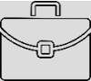
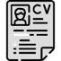
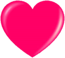
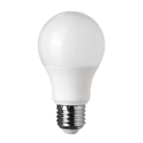
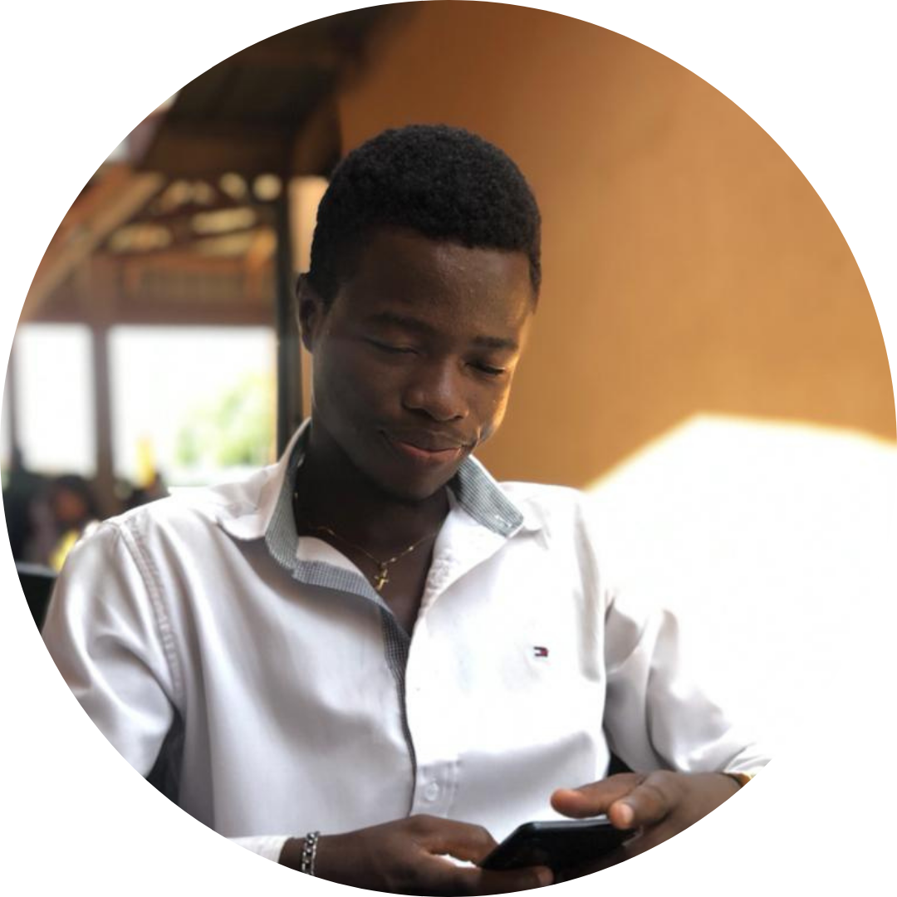

Développeur freelance | 2 ans d'expéreince
|  | Enseignement, Formation, Éducation |
| 4 années d'expérience | |
| Enseignement primaire et secondaire | |
| BTS option Informatique Développeur d'Applications(IDA) | |
| Abidjan(Cote d'Ivoire), Cocody, Riviera Faya | |
| permis de conduire B | |
|  | consuluter mon cv |
Je suis quelqu'un de déterminé et volontaire.
Proactif, je suis toujours à la recherche de propositions et d'actions pour
faire avancer mon travail. j'aborde mon activité de manière souple et je gère
aisément le changement et les imprévus.
La façon engageante avec laquelle je
présente mes idées laisse peu de place au doute pour mon interlocuteur :
vous souhaitez me suivre ?
Je suis doté d'un leadership et d'une volonté de progrès
continu qui font de moi un moteur incroyable dans une équipe.
| Dans ma relation avec les autres |
| Dans ma manière de travailler |
|  | Dans ma gestion des émotions |
#Engageant
#Direct
#Impartial
#Confiant
#Critique
#Indépendant
#Créatif
#Prudent

Créer de nouvelles choses
Analyser des données
Travailler en équipe
Je possède une énergie majoritairement tournée vers l'action.
Mes sources de motivation me mettent en mouvement et m'amènent à prendre des risques.
J'ai besoin d'être stimulé pour maintenir mon intérêt envers une activité ou un poste.
Pour moi, la stabilité est synonyme d'ennui et de lassitude.
Il est intéressant de me proposer régulièrement de nouveaux défis.
| ANALYSER |
Analyser est une source principale de ma réalisation personnelle.
J'apprécie de pouvoir aborder les situations de façon objective et rationnelle.
Je tiens particulièrement à ce que les décisions importantes soient prises en conséquence,
et pas de façon intuitive ou pour satisfaire les uns ou les autres.
| PROPULSER |
Il est essentiel pour moi de pouvoir m'investir dans une activité où je dois provoquer le passage à l'action.
Je me réalise en poussant les projets et en produisant des résultats.
Je suis impatient et je cherche à impulser une dynamique dans la réalisation du travail.
|  | CONCEVOIR |
Concevoir fait partie des activités qui m'intéressent le plus.
J'apprécie énormément de pouvoir mettre à contribution mes idées et penser à des choses qui n'existent pas encore.
Cependant, j'évite de le faire dans un cadre trop flou, sans repères clairs.
#Studieux
#Respect
#Professionnel
#Process
#Calme
#Méthode
#Concentration
#Ordre
#Sérieux
Je suis un manager qui prend les choses en main et qui fournit des consignes claires.
Je fais savoir ce qui est attendu et évite ainsi toute ambiguïté.
Pour moi, un leader doit exprimer clairement sa vision et donner le cap à suivre au groupe.
Je valorise le respect des principes et la fiabilité.
Je m'attends d'un manager qu'il m'apporte une vision et qu'il soit inspirant.
J'ai avant tout besoin d'être challengé autour d'objectifs clairs et partagés.
J'ai besoin d'un leader qui m'implique et qui me demande de me dépasser pour accomplir l'objectif collectif.
Je suis motivé par un leader qui possède le sens du résultat et qui valorise les résultats accomplis.
Je m'épanouis dans une culture tournée vers le résultat.
J'ai besoin d'un cadre de travail centré autour de l'atteinte des objectifs,
et qui valorise les accomplissements individuels.
J'accepte assez facilement d'avoir des règles claires à respecter et de la discipline,
mais j'apprécie aussi que des initiatives soient testées pour faire progresser les méthodes de travail.
Être dans une culture compétitive est quelque chose de stimulant pour moi car je sais où je suis attendu et ce sur quoi je suis jugé.
J'aime en effet que tout le monde soit porté par l'atteinte des objectifs.
Si ce n'est pas le cas, je ne vois pas l'intérêt de faire des efforts et de m'investir personnellement.
Pour apprendre de nouveaux savoirs,
j'ai besoin de les éprouver concrètement.
Je développe mes compétences au fur et à mesure des expériences terrains que j'accumule.
Les aspects théoriques ou trop abstraits me sont souvent étrangers,
et ne me permettent pas de progresser.
J'ai en effet plus de difficultés à les transposer dans le cadre du travail.
C'est en pratiquant et à force de répétition que je m'approprie les nouvelles connaissances.
Mon tempérament spontané m'amène à apprendre en testant par moi-même des concepts ou techniques.
Pour moi, la meilleure façon d'acquérir de nouvelles connaissances est avant tout d'essayer,
échouer au besoin pour comprendre, puis recommencer.
Je peux parfois manquer de patience.
Pour intégrer de nouvelles idées ou de nouvelles connaissances,
j'ai avant tout besoin de les expérimenter par moi-même.
Parlons de votre projet
|  |
Besoin de discuter de votre projet et obtenir l’avis d’un expert ?
|